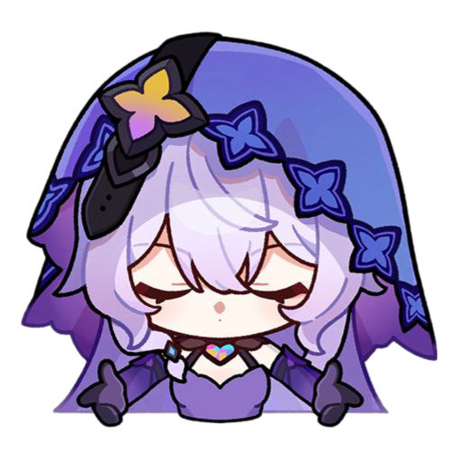

Sumario 
Información general
Estado
"Los momentos solitarios de gozo en los que puedo identificar y encapsular un fragmento de recuerdo antes de que se desvele al mundo son mis recuerdos favoritos."
Cisne Negro es un personaje jugable en Honkai: Star Rail.
Una Guardamemorias del Jardín de los Recuerdos. Una adivina misteriosa y elegante.
Siempre dispuesta a escuchar pacientemente los relatos de otros mientras esboza una sonrisa. Lo que usa como pretexto para introducirse en los "recuerdos" y obtener conocimiento de toda la información.
Es muy particular sobre coleccionar recuerdos únicos, pero es difícil discernir lo que ella misma piensa.
Cisne Negro es una mujer alta con piel pálida, cabello largo color lavanda hasta los muslos que se desvanece en un tono más oscuro y está ligeramente rizado en la parte inferior, y ojos violetas mezclados con amarillo, naranja y rojo.
En la cabeza lleva un velo morado con un cinturón. Su atuendo consiste en un traje morado con detalles en negro y un escote con tiras halter, sujeto a una gargantilla de encaje. Su ropa morada tiene dos ventanas a los lados y una gran hendidura en el frente, revelando ropa negra similar a un leotardo que tiene una ventana en su estómago, con todas las áreas reveladas cubiertas por una fina tela negra. Lleva guantes largos de color púrpura que llegan hasta el bíceps, junto con un brazalete dorado en su muñeca derecha. En sus piernas usa botas negras de tacón hasta los muslos con cinturones negros atados alrededor de sus muslos. Su atuendo también tiene estrellas de cuatro puntas en el torso, brazalete, guantes, botas y en el ala de su velo.
Video promocional de Cisne Negro - Canción de cuna | Honkai: Star Rail
Corto animado de Honkai: Star Rail - Rondó a través de innumerables kalpas